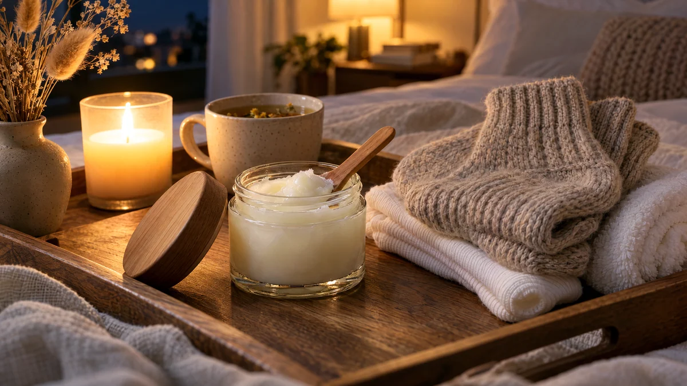

RESTFEST · HEMMASPA
Nattinpackning för torra fötter med kokosolja och ullsockor
En burk kokosolja, en skvätt olivolja och ett par gamla ullsockor. Fötterna blötläggs, masseras med en mjuk, vaniljdoftande kräm och packas in i sockor över natten. På morgonen är hälarna mjuka som efter en pedikyr. Samlingens enklaste behandling, eftersom den gör jobbet medan du sover.
- Förberedelse
- 10 min
- Verkningstid
- över natten
- Räcker till
- 3–4 behandlingar
- Nivå
- Nybörjare
Bra att veta. Gör ett lapptest innan du provar något nytt: stryk lite på insidan av underarmen och vänta ett dygn.
 Det här behöver du
Det här behöver du
Tryck på + vid det du behöver köpa.
Gör så här
- Smält kokosoljan försiktigt och rör ner olivoljan och vaniljsockret. Häll blandningen i en liten burk och låt den stelna till en mjuk kräm.
- Blötlägg fötterna i en balja med varmt vatten i 10 minuter, gärna som fotbadet i behandling 35.
- Torka fötterna noga, även mellan tårna.
- Ta en klick av krämen och massera in den i hälar, fotsulor och runt tårna i några minuter per fot.
- Dra på bomullssockorna och sedan ullsockorna ovanpå.
- Sov med sockorna på. Ta av dem på morgonen och torka bort det sista av oljan med en handduk.
Presentation och användning
- Fyll krämen i en liten glasburk med lock och ställ den vid sängen tillsammans med sockorna.
- Vik sockorna och lägg dem i en liten korg med en handduk, som på ett hotell.
- Gör behandlingen två eller tre kvällar i rad när hälarna är som torrast, sedan en gång i veckan.
- Använd gamla sockor, oljan kan lämna fläckar.
Bra att veta
- Gå inte barfota på golvet med oljiga fötter, du kan halka.
- Har du diabetes, dålig cirkulation eller sår på fötterna, fråga vården innan du använder fotbad och värmande inpackningar.
- Djupa sprickor i hälarna eller fotsvamp ska inte behandlas med olja. Fråga på apoteket eller i vården.
- Förvara krämen svalt, kokosolja smälter vid ca 24 grader.